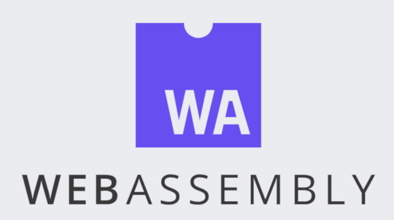
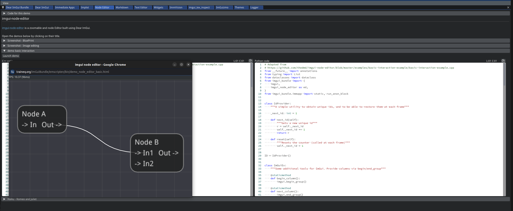

Webassembly (WASM) media pipelines#

This is a project for those that want to work on infrastructure / framework level code. The goal is to create a framework for running machine learning pipelines using webassembly components. This will allow us to run perception machine learning in the browser or in the cloud without tight coupling with specific language runtimes.
The value proposition of this project:
pipelines can run in the client browser preserving privacy when applications cannot transmit user data to the cloud.
WASM runtimes are secure by design as they run in a sandbox.
pipelines can run in the cloud using webassembly runtimes such as wasmtime and can support a variety of languages and environments including optionally GPU acceleration.
Ease of use: pipelines can be built using a visual editor and can be deployed to the cloud or to the browser.
Note
Please note the relationship between MediaPipe and this project. Both projects are working on similar problems, having said that the gstreamer basis caters to string real-time media processing and inherits the NVIDIA Deepstream nodes and plugins that accelerate media processing on NVIDIA GPUs.
Project Goals#
To demonstrate media processing using wasm pipelines we will build a simple application that can take a video stream from a webcam and apply a machine learning model to detect objects in the video stream.
The project will be broken down into the following tasks:
Task 1A: Familization with Gstreamer#

Gstreamer is an open source pipeline-based cross-platform extensible multimedia framework and has been adopted by major players in mission-critical use cases that need to process video and other ream-time streams. It also underpins NVIDIA’s DeepStream implementation.
To get started in Gstreamer please watch this video. This additional hands-on addresses NVIDIA pipeline elements. You do not need to have access to an NVIDIA GPU to work on this project.
Task 1B: Dear ImGui Bundle UI#
The Gstreamer pipeline will be configured and controlled by the Dear ImGui Bundle UI and extension of the Dear ImGui that is heavily used for games and heavyweight computational applications such as Blender and NVIDIA Omniverse.
For a browser experioenec see this demo.
More specifically we need the capabilities of the Node Editor that allows gstreamer pipelines to be specified in the browser visually and for the user to be able to test the pipeline in the browser or using remote processing nodes in the cloud.

Note
The Dear ImGui Bundle python SDK allows the UI to be coded in Python.
Task 2A: Familiarization with WebAssembly#
The implementation is being done here https://fluendo.com/en/blog/gstwasm-gstreamer-for-the-web/ and the effort is described in this video.
Webassembly runtimes such as wasmtime or serverless platforms such as cloudflare workers or AWS Lambda can be used.
This section will be updated to reflect the results of the prototype that help us define appropriate runtime for this project.